’s” just cancel?) and is arguably more
memorable than
Nonetheless, it is vastly inferior. Ask yourself what, exactly, does (
?) of the same (?) function – but with respect to a
different variable, whatever that means — times the derivative of some other function
a
variable? Can we use the same symbol to denote both a function and a variable?) evaluated somewhere (
?
Maybe?). Note that “the function
. This is the hallmark of imprecise, badly formulated
mathematics.
Definition 10.1 A function f : D → ℝ attains a maximum at c ∈ D if, for all x ∈ D,
f(x) ≤ f(c). It attains a minimum at c ∈ D if, for all x ∈ D, f(x) ≥ f(c).
Remark Note that these definitions have absolutely nothing to do with calculus! In fact, they make sense
even if D is not a subset of ℝ. For example, D could be the set of books on my bookshelf, and f could be
the map which assigns to each book x the number of pages it contains. Clearly this function will attain
both a maximum and a minimum (my bookshelf will contain both a longest and shortest book), but it’s
absurd to try to define its derivative.
Note also that, if a function attains a maximum, at c say, it is certainly bounded above, by f(c).
Similarly, if it attains a minimum at b, it is bounded below by f(b). But it’s quite possible for a function to
be bounded above but not attain a maximum, or bounded below and not attain a minimum. For
example
is
bounded below, by 0 for example, but does not attain a minimum: whatever
c ∈ (0
,∞) we try,
there is always some other point
x ∈ (0
,∞) with
f(
x)
< f(
c): we could take
x =
c + 1, for
example.
Finally, note that if f attains a maximum at c, then its supremum is precisely f(c): for all
x ∈ D, f(x) ≤ f(c), so f(c) is an upper bound on f, and any number K < f(c) is not an upper
bound on f, since f(c) > K! Similarly, if f attains a minimum at b then its infimum is f(b).
We begin by proving a very fundamental theorem about functions which are continuous on closed, bounded
intervals, that is, intervals of the form
Such
functions are bounded, and attain both a maximum and a minimum.
Theorem 10.2 (Extreme Value Theorem) Let f : [a,b] → ℝ be continuous. Then f attains
both a maximum and a minimum.
Proof: We first prove that f is bounded above. Assume, towards a contradiction that f is not bounded
above. Then every n ∈ ℤ+ is not an upper bound on f, so there exists xn ∈ [a,b] such that f(xn) > n.
But (xn) is a bounded sequence (above by b, below by a), so has a convergent subsequence
(xnk) by the Bolzano-Weiertsrass Theorem. Since a ≤ xnk ≤ b, its limit c, say, is also in [a,b].
Since xnk → c ∈ [a,b] and f is continuous (at c, in particular), f(xnk) → f(c). Since f(xnk)
converges, it is bounded above. But f(xnk) > nk ≥ k, a contradiction. Hence, f is bounded
above.
Since the set A = {f(x) : x ∈ [a,b]} is bounded above, and is nonempty, it has a supremum L, say, by
the Axiom of Completeness. Now, for each n ∈ ℤ+, L- 1∕n < L, so is not an upper bound on A. Hence, for
each n ∈ ℤ+, there exists yn ∈ [a,b] such that f(yn) > L - 1∕n. Clearly f(yn) ≤ L so, by the
Squeeze Rule, f(yn) → L. Since (yn) is bounded, it too has a convergent subsequence ymk say,
converging to some limit d ∈ [a,b], by the Bolzano-Weiertsrass Theorem. Since f is continuous at d,
f(ymk) → f(d). But f(ymk) → L, since it is a subsequence of f(yn). Limits are unique, so
f(d) = L = supA. Hence, for all x ∈ [a,b], f(x) ≤ f(d), that is, f attains a maximum (at
d).
It follows immediately that f attains a minimum also: let g : [a,b] → ℝ, g(x) = -f(x). This is
continuous so, by the work above, attains a maximum at some point d ∈ [a,b]. But then f attains a
minimum at d. □
Note that all the hypotheses are important for this theorem. If f : [a,b] → ℝ is not continuous, it may
fail to be bounded:
or be
bounded but fail to attain a maximum or minimum:
Similarly, if the domain is not a closed bounded interval, the conclusion may fail, even if
f is
continuous:
is
unbounded, and
is
bounded but attains neither a maximum nor a minimum.
So far, we haven’t made any reference to the derivative of f. You may find this surprising:
after all, in your previous studies of calculus, you’ve been trained, when asked to find
the maximum or minimum values of a function, to find and examine its critical points
(also called “turning” or “stationary” points), that is points x were f′(x) = 0. The next
theorem
explains why.
Theorem 10.3 (Interior Extremum Theorem) Let f : (a.b) → ℝ be differentiable, and attain
a maximum or a minimum at c ∈ (a,b). Then f′(c) = 0.
Proof: Assume first that f attains a maximum at c ∈ (a,b). Consider the sequences
These are sequences in (
a,b)
\{c} which converge to
c, so
by
the definition of
f′(
c). But
f attains a maximum at
c, so
f(
xn)
≤ f(
c) and
f(
yn)
≤ f(
c), and
xn < c while
yn > c. Hence
sn ≥ 0 (it’s a non-positive number divided by a negative number) while
tn ≤ 0 (it’s a
non-positive number divided by a positive number). But then
by
Theorem
2.14. Hence
f′(
c)
≥ 0 and
f′(
c)
≤ 0, so
f′(
c) = 0.
If f attains a minimum at c, we apply the argument above to g(x) = -f(x), which attains a maximum
at c. Then g′(c) = 0, so f′(c) = -g′(c) - 0. □
Example 10.4 Find the maximum and minimum values attained by
Note that
f does attain both a maximum and a minimum, by the Extreme Value Theorem (the
domain is a closed bounded interval, and the function is continuous).
Solution: Either the extrema occur at the endpoints {0,2} or one of both occur in (0,2). If an extremum
occurs at c ∈ (0,2) then f(c) also an extremum of the function restricted to (0,2), so f′(c) = 0 by the
Interior Extremum Theorem. Hence, the extrema occur either at an endpoint 0, 2, or at some interior
critical point, where f′(c) = 0. Now
if
c = 0 or
c = 2
∕3 (in this case, one of the critical points is actually also an endpoint). Now
Hence, the maximum value of
f is 4, attained at the endpoint 2, and the minimum value is
- attained at
the interior critical point

. Note that in this case, the critical point 0 (also an endpoint) is neither a
maximum nor a minimum of
f.
□
We can combine the Extreme Value Theorem and the Interior Extremum Theorem to give a
surprisingly powerful result traditionally called Rolle’s Theorem:
Theorem 10.5 (Rolle’s Theorem) Let f be a real function which is continuous on [a,b] and
differentiable on (a,b), and assume that f(a) = f(b). Then there exists c ∈ (a,b) such that f′(c) = 0.
Proof: By the Extreme Value Theorem, f attains both a maximum and a minimum on [a,b]. If both the
maximum and the minimum occur at endpoints of [a,b], then since f(a) = f(b), the maximum value equals
the minimum value, so f is constant on [a,b] and hence f′(c) = 0 for all c ∈ (a,b), and we’re done.
Otherwise, either the maximum or the minimum occurs at an interior point c ∈ (a,b). But then f′(c) = 0
by the Interior Extremum Theorem. □
10.2 Increasing and decreasing functions
It is common to interpret the derivative of a function f as the rate of change of f(x) as its input variable
x is increased. So, if f′(a) > 0, we expect that f is an increasing function, at least for x sufficiently close to
a. We’ve already seen that this naive expectation can actually be wrong in general (see Example 9.9). To
convert information about the sign of f′ into information about the increasing or decreasing
behaviour of f, we need to be a bit more careful. We start (of course!) by carefully defining our
terms.
Definition 10.6 A function f : D → ℝ (where D ⊆ ℝ) is increasing if, for all x,y ∈ D, if y > x
then f(y) ≥ f(x). It is strictly increasing if, for all x,y ∈ D, if y > x then f(y) > f(x). It is
decreasing if, for all x,y ∈ D, if y > x then f(y) ≤ f(x), and strictly decreasing if, for all
x,y ∈ D, if y > x then f(y) < f(x).
Remark Note once again that these definitions have absolutely nothing to do with calculus! They use only
the ordering relation on ℝ, and make sense even if the function is not differentiable (or, indeed,
continuous). Note also that a function can be both increasing and decreasing – but only if it is constant!
(Can you see why?)
Example 10.7 The step function
is an increasing function.
The key result allowing us to deduce information about the decreasing/increasing behaviour of
differentiable functions is called the Mean Value Theorem.
Theorem 10.8 (Extended Mean Value Theorem) Let f and g be real functions which are
continuous on [a,b] and differentiable on (a,b), and assume that, for all x ∈ (a,b), g′(x)≠0. Then
there exists c ∈ (a,b) such that
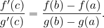
Proof: First note that the conditions on g imply that g(a)≠g(b) (since if g(b) = g(a) then g′(x) = 0 for
some x ∈ (a,b) by Rolle’s Theorem). Hence,
is a
well-defined real constant. Let
h : [
a,b]
→ ℝ such that
h(
x) =
f(
x)
-αg(
x). Then
h is continuous on [
a,b]
and differentiable on (
a,b), and, as one may easily verify,
Hence
h satisfies the hypotheses of Rolle’s Theorem, and we conclude that there exists
c ∈ (
a,b) such that
h′(
c) = 0. But then
f′(
c) =
αg′(
c), whence the result immediately follows.
□
The name “Mean Value Theorem” is usually reserved for a special case of Theorem 10.8:
Corollary 10.9 (Mean Value Theorem) Let f be continuous on [a,b] and differentiable on
(a,b). Then there exists c ∈ (a,b) such that
Proof: Just apply Theorem 10.8 in the case where g : [a,b] → ℝ, g(x) = x. □
Remarks
- The Mean Value Theorem has a nice geometric interpretation. Consider the graph y = f(x) of
a differentiable function f : ℝ → ℝ. For each pair of distinct numbers a < b, we can construct
the chord (straight line) passing through the points (a,f(a)) and (b,f(b)) on the graph. Its
slope is (f(b) - f(a))∕(b - a). The Mean Value Theorem asserts that, at some point (c,f(c))
on the graph between these two points, the tangent line to the graph is parallel to the chord.
- The Mean Value Theorem guarantees the existence of a point c with the required f′(c). It says
nothing about uniqueness: there could be more than one such point.
- The Extended Mean Value Theorem also has a nice geometric interpretaion, but to understand it we
need to think about parametrized curves in ℝ2, rather than the graph of the function f. Consider
the function γ : [a,b] → ℝ2, γ(t) = (g(t),f(t)). We can think of this as the trajectory
of a point which at time t ∈ [a,b] occupies position γ(t) ∈ ℝ2. Its velocity at time t is
γ′(t) = (g′(t),f′(t)). Note that, by assumption, g′(t)≠0, so this vector is never vertical and
hence the tangent line to the curve at γ(t) has a well-defined slope, f′(t)∕g′(t). Note also
that
is the slope of the straight line segment joining the endpoints γ(a) and γ(b) of the curve γ. Hence the
Extended Mean Value Theorem says that there is some time c ∈ (a,b) such that the tangent to the
curve at γ(c) is parallel to the line segment joining its endpoints.
The Mean Value Theorem allows us (among many other things) to relate the sign of f′ to the
increasing/decreasing behaviour of f.
Proposition 10.10 Let I be an interval and f : I → ℝ be differentiable.
- If f′(x) ≥ 0 for all x ∈ I then f is increasing.
- If f′(x) > 0 for all x ∈ I then f is strictly increasing.
- If f′(x) ≤ 0 for all x ∈ I then f is decreasing.
- If f′(x) < 0 for all x ∈ I then f is strictly decreasing.
- f is constant if and only if f′(x) = 0 for all x ∈ I.
Proof: The proofs of parts (a)–(d) are similar, so we will do part (a), and leave (b), (c), (d) as an
exercise.
(a) Assume, towards a contradiction, that f′(x) ≥ 0 but f is not increasing. Then there exist a,b ∈ I
with a < b such that f(a) > f(b). But then, by the Mean Value Theorem applied to f on [a,b], there exists
c ∈ (a,b) such that
a
contradiction.
(e) If f(x) = c, some constant, then f′(x) = 0 for all x ∈ I by Example 9.2. Conversely, assume
f′(x) = 0 for all x ∈ I. Then f is increasing by part (a) and decreasing by part (b), so must be constant.
□
Remarks
- The converses of parts (a) and (c) are also true. That is, if f : I → ℝ is increasing (and
differentiable), then f′(x) ≥ 0 for all x ∈ I. Similarly if f : I → ℝ is decreasing and
differentiable, then f′(x) ≤ 0 for all x ∈ I. One can prove this by adapting the idea of the
proof of the Interior Extremum Theorem.
- The converses of parts (b) and (d), by contrast, are false! For example
is strictly increasing, but its derivative is not strictly positive.
- It’s important to note that Proposition 10.10 concerns functions on intervals. For example
has f′(x) = -1∕x2 which is negative everywhere, but f(-1) < f(1), so f is not a decreasing
function. This doesn’t contradict Proposition 10.10 since ℝ\{0} is not an interval.
- Strictly increasing (or decreasing) functions are always injective, so Proposition 10.10 gives us
a sneaky trick to prove that (some) functions are injective.
Example 10.11 f : ℝ → ℝ, f(x) = 2x + sinx has f′(x) = 2 + cosx ≥ 2 - 1 > 0 for all x, so is
strictly increasing by Proposition 10.10. Hence, if f(x) = f(y) then x ≮ y and y ≮ x, so x = y. That
is, f is injective.
The Mean Value Theorem is a powerful tool that can turn geometric intuition about the graph of a
function into rigorously proved facts. For example, consider the graph of the function
The
tangent line to this graph at (1
,g(1)) = (1
,1) is the straight line through (1
,1) of slope
g′(1) =
e0 = 1, that
is, the line
y =
x. Since the
second derivative of
g
for
all
x, anyone travelling along the graph in the sense of increasing
x is always turning
leftwards (the slope of
the tangent line increases with
x). This leads us to expect that the whole graph
y =
g(
x) lies
above the
tangent line
y =
x, that is, for all
x ∈ ℝ,
Our
geometric intuition has led us to this conclusion, but of course, geometric intuition can easily lead us astray
(see Example
9.9!), so the argument above certainly is
not a proof of our assertion. But the Mean Value
Theorem allows us to turn it into a proof.
Example 10.12 Let f : ℝ → ℝ, f(x) = ex-1 - x. Then, for all x ∈ ℝ, f(x) ≥ 0, and f(x) = 0 if
and only if x = 1.
Proof: Clearly f(1) = 0, so we must show that for all x ∈ ℝ\{1}, f(x) > 0. Note that f is differentiable
and
so
f′(
x)
> 0 for all
x > 1 and
f′(
x)
< 0 for all
x < 1. Assume, towards a contradiction, that there exists
a ∈ ℝ\{1
} such that
f(
a)
≤ 0.
If a > 1, then the Mean Value Theorem applied to f : [1,a] → ℝ shows that there exists c ∈ (1,a) such
that
But
f′(
c)
> 0 for all
c > 1, a contradiction.
If a < 1, then the Mean Value Theorem applied to f : [a,1] → ℝ shows that there exists c ∈ (a,1) such
that
But
f′(
c)
< 0 for all
c < 1, a contradiction.
Hence, no such a exists, and the claim is proved. □
One reason to go through Example 10.12 in detail is that it allows us to prove a very important
inequality called the AM-GM inequality. Recall (from your study of Statistics) that the arithmetic mean
of a collection of n real numbers x1,x2,…,xn is
In
the case where none of the numbers is negative, we can define an alternative kind of “average” called the
geometric mean
The AM-GM inequality asserts that
α ≥ γ, with equality if and only if all the numbers
xi are
equal.
Theorem 10.13 (The AM-GM inequality) For all x1,x2,…,xn ∈ [0,∞),
These two numbers are equal if and only if x1 =
x2 =

=
xn.
Proof: Let α = (x1 + x2 + + xn)∕n. By Example 10.12, f(xi∕α) ≥ 0, that is, for each
i,
with
equality if and only if
xi =
α. Multiplying these
n inequalities together we see that
with
equality if and only if
x1 =
x2 =

=
xn =
α. Hence
and
the
n-th root function is increasing, so
with
equality if and only if
x1 =
x2 =

=
xn =
α.
□
Note that we can give a much simpler proof of the AM-GM inequality in the (very) special case that
n = 2:
with equality if and only if
-
= 0, that is,
x1 =
x2.
10.3 Higher derivatives and Taylor’s Theorem
If a function f : D → ℝ is differentiable (everywhere on D) then its derivative defines another function
f′ : D → ℝ, and we can ask whether this function, in turn, is differentiable. If it is, then its derivative is
denoted f′′ : D → ℝ and called the second derivative of f. Similarly, if f′′ : D → ℝ is differentiable, its
derivative f′′′ : D → ℝ is the third derivative of f. Proceeding inductively, we can define the nth derivative
of f, denoted f(n) to be the derivative (if it exists), of f(n-1), where f(0) is, by definition,
just the function f itself (so f(1) = f′, f(2) = f′′ etc.). If f(n) : D → ℝ exists, we say that
f is n times differentiable, and if f is n times differentiable for all n ∈ ℤ+, we say that f is
smooth.
Example 10.14 Every polynomial function p : ℝ → ℝ, p(x) = a0 + a1x +  + amxm, is smooth.
This follows immediately from Proposition 9.12.
+ amxm, is smooth.
This follows immediately from Proposition 9.12.
Example 10.15 The function f : ℝ → ℝ, f(x) = |x|3 is twice differentiable but not three times
differentiable. To see this, note that f coincides with the smooth function f+(x) = x3 on (0,∞) and
with the smooth function f-(x) = -x3 on (-∞,0), so it suffices to consider the differentiability of
f at 0. Let xn be a sequence in ℝ\{0} converging to 0. Then
so
f′(0) = 0, and it follows that
f is once differentiable. In fact
so
whence
f′′(0) = 0. Hence,
f is twice differentiable, and
But
f′′ is not differentiable at 0, by Example
9.6, so
f is not three times differentiable.
An interesting interpretation of the Mean Value Theorem can be given as follows. Let I ⊆ ℝ be an open
interval, f : I → ℝ be differentiable, and choose and fix some a ∈ I. Then for any other x ∈ I, we may
apply the Mean Value Theorem to f : [a,x] → ℝ (if x > a) or f : [x,a] → ℝ (if x < a) to deduce that there
exists c between a and x such that
Note
that the same equation holds trivially in the case where
x =
a (with
c =
x =
a). So, for
x close to
a
(meaning that
|x - a| is small) we can approximate
f by the constant
f(
a), and the error in this
approximation is of size
|f′(
c)
||x-a|, where
c is somewhere between
a and
x (and, of course, depends on
x).
The moral is that differentiability (once) of f on an open interval allows one to approximate f by a
degree 0 polynomial function (i.e. a constant), with an error controlled by f′. It turns out that if f is n
times differentiable one can do better: one can approximate f by a degree (n- 1) polynomial function, with
an error controlled by f(n).
Theorem 10.16 (Taylor’s Theorem) Let I ⊆ ℝ be an open interval, f : I → ℝ be (n + 1) times
differentiable, and a,x ∈ I. Then there exists c between a and x such that
Proof: First note that the claimed equation holds trivially (with c = a) in the case where x = a. Choose
and fix a,x ∈ I, x≠a, and consider the function F : I → ℝ,
Then
the claim to be proved is that there exists
c between
a and
x such that
Now, by the Product Rule, F is differentiable, and, as is easily verified (exercise!),
Let
G(
t) = (
x-t)
n+1. Then
F,G satisfy the hypotheses of the Extended Mean value Theorem (Theorem
10.8)
on the interval with endpoints
a,x (note that
G′(
t) = 0 only if
t =
x), so there exists
c between
a and
x
such that
whence (
10.10) immediately follows.
□
The polynomial
is
often called the
nth Taylor approximant of the function
f about
a, and
is
called the
remainder. Note that in the proof above,
F is
pn but thought of as a function of the expansions
point
a rather than the variable
x.
Example 10.17 Let f : [0,∞) → ℝ be the function f(x) =  . Construct the third Taylor
approximant for f about 4, and hence find an approximation to f(5) =
. Construct the third Taylor
approximant for f about 4, and hence find an approximation to f(5) =  . Use Taylor’s Theorem
to find upper and lower bounds on .
. Use Taylor’s Theorem
to find upper and lower bounds on .
Solution: The first four derivatives of f are
so
f(4) = 2,
f′(4) =

,
f′′(4) =
-2
-5, and
f′′′(4) = 3
∕2
8. It follows that the third Taylor approximant for
f about 4 is
Using the approximation
f(
x)
≈ p3(
x) gives
By
Taylor’s Theorem, the true value of
f(5) is
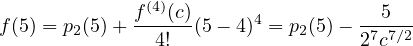 for
some
c ∈ (4
,5). It follows that the true value of

is strictly less than
p2(5), but strictly greater than
p2(5)
- 5
∕(2
74
7∕2). That is, we have established that
For
comparison, my pocket calculator tells me that
≈ 2
.236067977.
□
Example 10.18 (The Alternating Harmonic Series) You proved (see Example 5.20) that the
alternating series
converges. This followed from a quick application of the Alternating Series Test (Theorem
5.19).
Like all convergence tests, this allows you to determine whether the series converges, but tells you
nothing about its limit. We are now in a position to prove something much stronger about this series,
namely

Proof: Consider the function f : (0,∞) → ℝ, f(x) = lnx. I claim that this is smooth and has derivatives,
for n ≥ 1,
We
can prove this by induction: the first derivative is
so
the claim holds for
n = 1. Assume the claim holds for
n =
k. Then
so
the claim also holds for
n =
k + 1. Hence, by induction, the claim holds for all
n ≥ 1.
Since f is smooth, we can construct, for any degree n ≥ 1, the degree n Taylor approximant to f based
at a = 1,
Now
f(1) = ln1 = 0 and, by our formula,
f(n)(1) = (
-1)
n+1(
n - 1)!, so
Hence,
the
n-th partial sum of the Alternating Harmonic Series, so we must establish that
pn(2)
→ ln2 =
f(2).
We now apply Taylor’s Theorem to f with x = 2 and a = 1: there exists c ∈ (1,2) such that
Hence, by the Squeeze Rule,
|pn(2)
- f(2)
|→ 0, that is,
pn(2)
→ f(2), as was to be proved.
□
Summary
- The Extreme Value Theorem: A continuous function on a closed, bounded interval
f : [a,b] → ℝ is bounded above and below, and attains both a maximum and a minimum
value.
- The Interior Extremum Theorem: If a differentiable function f(a,b) → ℝ attains a
maximum or a minimum at c ∈ (a,b) then f′(c) = 0.
- The Mean Value Theorem: If a function f is continuous on [a,b] and differentiable on (a,b),
then there exists c ∈ (a,b) such that
- We can use the Mean Value Theorem to show that functions f : I → ℝ, where I ⊆ ℝ is an
interval, are increasing if f′(x) ≥ 0 for all x ∈ I (and decreasing if f′(x) ≤ 0 for all x ∈ I).
- The definitions of increasing, decreasing, maximum and minimum have nothing to do with
calculus. But we can use calculus to find/understand them.
- A function f : D → ℝ is n times differentiable if all its derivatives up to the nth exists
everywhere in D. It is smooth if it is n times differentiable for all n ∈ ℤ+.
- A function which is (n+1) times differentiable can be approximated by a polynomial of degree
n, with an error controlled by f(n+1), its (n + 1)th derivative. This follows from Taylor’s
Theorem.
11 Differentiablity of power series
Recall that a power series is a series of the form
where
x is a real variable and
a0,a1,a2,… is a real sequence (often called the
coefficients of the power
series). So this is actually a collection of infinitely many series, one for each choice of value for
x.
As usual, the series
converges at a particular fixed value of
x if its sequence of partial sums
converges in the sense of Definition
2.4, and
converges absolutely if the associated series
∑
n=0∞|anxn| converges. Certainly this sequence converges if
x = 0, since it is the constant sequence
(
a0,a0,a0,…), but it may diverge for other values of
x. The set of values
x ∈ ℝ for which the
series converges is almost completely determined by its
radius of convergence (Definition
5.27):
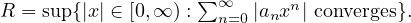 This
follows from Theorem
5.29: the series converges absolutely for all
|x| < R and diverges for all
|x| > R.
So, a power series with radius of convergence R defines a function
Switching viewpoint, its partial sums can be considered to be a sequence of polynomial functions:
Each of these is certainly a differentiable function (on the whole of
ℝ), so one might expect that their limit,
f(
x) = lim
k→∞sk(
x), is also a differentiable function, and that
This
turns out to be true, at least on (
-R,R) where
R is the radius of convergence of
f, but proving it is no
simple matter. The problem is that
f′(
x) is really a
double limit
and our expected formula for
f′(
x) results from computing the double limit in the
opposite
order
But
swapping the order in which we evaluate a double limit can, in general, change its value!
Example 11.1 Consider the sequence of functions
Let’s compare the double limits
We first note that, for all
x≠0, the real sequence
by the Algebra of Limits. On the other hand, if
x = 0,
So
Hence
Turning to the second double limit, for each k ∈ ℤ+,
since the function
sk is continuous. Hence
The two limits are different!
□
So computing
in
principle tells us precisely nothing about
We
will need to work considerably harder!
We begin by showing that a power series and the obvious candidate for its derivative have the same
radius of convergence.
Lemma 11.2 The power series f(x) = ∑
n=0∞a
nxn and g(x) = ∑
n=1∞na
nxn-1 have the same
radius of convergence.
Proof: We define the following subsets of ℝ,
and
recall that sup
A and sup
B are the radii of convergence of
f and
g, respectively. We will prove
that
- for all x with |x| < supB, f(x) converges absolutely (so |x|∈ A, and hence supA ≥ supB),
and
- for all x with |x| < supA, g(x) converges absolutely (so |x|∈ B, and hence supB ≥ supA).
It follows immediately that supA = supB, which is what we seek to prove.
(i) Let x ∈ ℝ with |x| < supB. Then sk = ∑
n=1k|nanxn-1| converges (Theorem 5.29), and hence is
bounded above, and
So
(
tk) is increasing and bounded above, and hence converges, by the Monotone Convergence Theorem. Hence,
|x|∈ A.
(ii) Let x ∈ ℝ with |x| < supA. If x = 0 then g(x) certainly converges, so we may assume |x| > 0. Choose
ρ ∈ (|x|,supA). Then tk = ∑
n=0k|an|ρn converges (Theorem 5.29), and hence is bounded above.
Now
We
have seen that the sequence
n(
|x|∕ρ)
n → 0, since (
|x|∕ρ)
< 1 (Example
5.16), so it must be bounded, that
is, there exists
K > 0 such that, for all
n,
n(
|x|∕ρ)
n ≤ K. But then
Hence,
sk is increasing and bounded above, so converges, by the Monotone Convergence Theorem
(Corollary
3.20). Hence,
|x|∈ B.
□
We now show that g(x) really is the derivative of f(x).
Theorem 11.3 Suppose that f(x) = ∑
n=0∞a
nxn has radius of convergence R > 0. Then f is
differentiable on (-R,R), and
Proof: Choose and fix y ∈ (-R,R). Let
By
Lemma
11.2,
g(
x) has radius of convergence
R, so by Lemma
11.2 again (applied to
g(
x)),
h(
x) also has
radius of convergence
R. Let (
xj) be any sequence in (
-R,R)
\{y} converging to
y. Then the
sequence

is
well-defined, and we seek to show that
sj → 0.
By Theorem 5.29, the power series h(x) converges absolutely on (-R,R). Hence, the function
is
well-defined and is manifestly increasing. We will show that there exists
r*∈ (0
,R) such that
|sj|≤ H
H(
r*)
|xj - y| for all
j sufficiently large. It then follows that
sj → 0 (by the Squeeze
Rule).
For each j,k ∈ ℤ+, let
and
note that
sj = lim
k→∞Pjk. Repeatedly using the identity
we
see that
Let
rj = max
{|xj|,|y|}∈ (0
,R). Then
Now xj → y, so rj →|y| < R, and hence there exists J ∈ ℤ+ such that, for all j ≥ J,
rj < r* =  (|y| + R). Then, since H is an increasing function, for all j ≥ J, H(rj) ≤ H(r*), and
hence,
(|y| + R). Then, since H is an increasing function, for all j ≥ J, H(rj) ≤ H(r*), and
hence,
Now,
for each fixed
j ≥ J, the sequence
|Pjk| indexed by
k certainly converges, to
|sj|, and each
term in this sequence is no greater than the constant (independent of
k)
 H
H(
r*)
|xj - y| so, by
Proposition
2.14,
This
inequality holds for all
j ≥ J and so, by the Squeeze Rule,
sj+J → 0, so
sj → 0 (by the Tail Lemma) as was
to be shown.
□
So the derivative of a power series exists on its open interval of convergence and is just the power series
obtained by termwise differentiation. Since f′(x) is also a power series with radius of convergence R, we can
apply Theorem 11.3 to f′(x) and deduce that f : (-R,R) → ℝ is actually twice differentiable. Further,
f′′(x) also has radius of convergence R, so is differentiable on (-R,R), that is, f is three times
differentiable. In fact, we can keep applying Theorem 11.3 as often as we like, and we conclude that f is
smooth.
Corollary 11.4 Let f(x) = ∑
n=0∞anxn have radius convergence R > 0. Then f : (-R,R) → ℝ
is a smooth function, and
Proof: For each integer k ≥ 0, define
I
claim that each power series
gk(
x) has radius of convergence
R and that, for all
x ∈ (
-R,R),
f(k)(
x) =
gk(
x). We prove this by induction on
k.
Certainly the claim holds for k = 0, since g0 = f. So, assume that the claim holds for some value k ≥ 0,
and consider gk+1. Defining coefficients bn = an+k so that gk(x) = ∑
n=0∞bnxn, then
Hence, by Lemma
11.2,
gk+1 has the same radius of convergence as
gk, and by Theorem
11.3,
gk+1(
x)
coincides with the derivative of
gk. But, by our induction hypothesis,
gk has radius of convergence
R and
coincides with
f(k), so
gk+1 has radius of convergence
R and coincides with
f(k+1). Hence, if the claim
holds for some
k ≥ 0, it also holds for
k + 1. Hence, by induction, the claim holds for all integers
k ≥ 0.
It follows that f(k)(0) = gk(0) = k!ak, which completes the proof. □
Corollary 11.4 applies to any power series with non-zero radius of convergence so, in particular, it
applies to the series defining exp, sin, and cos.
Proposition 11.5 The functions exp : ℝ → ℝ, sin : ℝ → ℝ, cos : ℝ → ℝ are smooth, and their
derivatives are
Proof: That these functions are smooth follows immediately from Corollary 11.4. Furthermore, by
Theorem 11.3
for all
x ∈ ℝ, so exp
′ = exp. The formulae for sin
′ and cos
′ follow from similar arguments.
□
Smooth functions are differentiable, and hence continuous, so this restrospectively justifies our
assumption that sin : ℝ → ℝ (for example) is continuous.
Now that we know that exp is differentiable, and its derivative is exp, we can prove that it has all the
nice properties you’re familiar with.
Proposition 11.6 For all x,y ∈ ℝ, exp(x + y) = exp(x)exp(y).
Proof: Choose any constant a ∈ ℝ and consider the function
By
the Product and Chain Rules, this is differentiable with derivative
Hence by Proposition
10.10,
f is constant, that is, for all
x ∈ ℝ,
f(
x) =
f(
a), that is
This
holds for all
a ∈ ℝ and, in the case
a =
x +
y, yields the claimed identity.
□
Proposition 11.7 exp is a bijective map ℝ → (0,∞).
Proof: We first note that there is no x ∈ ℝ such that exp(x) = 0 since, if there were, then Proposition 11.6
with y = -x we would imply
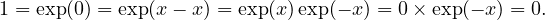 Since
exp is continuous and exp(0) = 1
> 0, it follows that exp(
x)
> 0 for all
x ∈ ℝ, by the Intermediate Value
Theorem (if exp(
x)
< 0 there would exist
c between 0 and
x with exp(
c) = 0, contradicting the fact just
established). Hence, exp
′(
x) = exp(
x)
> 0 for all
x ∈ ℝ, so exp is strictly increasing by Proposition
10.10,
and hence is injective.
It remains to prove that exp is surjective.
Recall
(Example 10.12) that, for all x ∈ ℝ,
Hence the function exp is unbounded above. So, given any
y ≥ 1, there exists
a ∈ (0
,∞) such that
exp(
a)
> y. But then, by the Intermediate Value Theorem, there exists
x ∈ [0
,a) such that exp(
x) =
y and,
by Proposition
11.6, exp(
-x) = 1
∕y. Hence, exp attains every value in [1
,∞)
∪ (0
,1] = (0
,∞).
□
We can combine Propositions 11.6 and 11.7 into a very slick statement using the language of Group
Theory (for those of you who enjoyed MATH1120).
Corollary 11.8 exp : ℝ → (0,∞) is an isomorphism from (ℝ,+), the group of real numbers under
addition, to ((0,∞),×), the group of positive real numbers under multiplication.
We finish this section with a nice trick. Sometimes we can exactly sum a series by thinking of it as a
power series evaluated at a specific value x. Here’s a simple example:
Example 11.9 Exactly sum ∑
n=1∞.
Solution: It’s easy to show (using the Ratio Test, for example) that the series converges, but this doesn’t
tell us what its limit is. We need to be sneakier.
Consider the power series
This
is the Geometric Series with common ratio
x. We showed previously that it has radius of convergence
R = 1, and for all
x ∈ (
-1
,1), its limit is
By Theorem 11.3, this function is differentiable on (-1,1) and
But,
by the Chain Rule, we already know from (
11.11) that
f is differentiable with derivative
Hence, for all
x ∈ (
-1
,1),
In
the special case
x = 1
∕2, we deduce that
and
hence
□
Summary
- A power series f(x) = ∑
n=0∞anxn with radius of convergence R > 0 is differentiable on
(-R,R), and its derivative is
This power series also has radius of convergence R.
- It follows that f : (-R,R) → ℝ is actually smooth (infinitely differentiable), and that
- These facts apply to all convergent power series, including those defining exp, sin and cos.
12 Integration
12.1 Dissections and Riemann sums
How do we define the area of a bounded subset of the plane ℝ2? If the subset is a rectangle, the answer is
easy: its area is its length times its width. Similarly, if the subset is a union of non-overlapping rectangles
it’s easy: we just add up the areas of all the constituent rectangles. But what if the subset is more
complicated: the region bounded by the x-axis, the vertical lines x = a and x = b > a and
the graph y = f(x) of some non-constant function, for example? One approach is to define
the area of such a region to be the unique real number (if it exists) which is no bigger than
the total area of any collection of rectangles which covers the region, and no smaller than the
total area of any collection of rectangles which is covered by the region. This is the underlying
idea that leads to the Riemann integral. We begin by identifying the collections of rectangles
we will use. These are determined by dissecting the interval [a,b] into a finite collection of
subintervals.
Definition 12.1 A dissection of a closed bounded interval [a,b] is a finite subset of [a,b]
containing both a and b. By convention, if has n + 1 elements, we label these a0,a1,…,an, so that
and say that
is a dissection of
size n. We say that
is a
regular dissection if
aj-aj-1 = (
b-a)
∕n
for all
j, that is, if the points in the dissection are regularly spaced.
Recall that a function f : D → ℝ is bounded if its range f(D) ⊆ ℝ is a bounded set, that is, if there
exist M,m ∈ ℝ such that, for all x ∈ D, m ≤ f(x) ≤ M.
Definition 12.2 Let f : [a,b] → ℝ be a bounded function and be a dissection of size n of [a,b]. For
each j ∈{1,2,…,n}, let
Note that these numbers exist, since
f is bounded. The
lower Riemann sum of
f with respect to
is
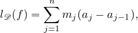 and
the
upper Riemann sum of
f with respect to
is
The idea is that a dissection of size n divides [a,b] into n subintervals, [aj-1,aj] for j = 1,2,…,n. If
f(x) ≥ 0 for all x, then the lower Riemann sum can be visualized as the total area of the tallest rectangles
with bases [aj-1,aj] which fit under the graph y = f(x) between x = a and x = b. So l (f) is an
underestimate of the area under the graph. Similarly, the upper Riemann sum can be visualized as the total
area of the shortest rectangles with bases [aj-1,aj] which the graph y = f(x) between x = a and
x = b fits under and is thus an overestimate of the area under the graph. This is illustrated in
Figure 8.
Note that mj ≤ Mj for all j ∈{1,2,…,n}, so it follows immediately that, for all bounded functions
f : [a,b] → ℝ and all dissections of [a,b],
Example 12.3 1 = {0,1}, 2 = {0, ,1}, and 3 = {0,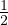,,1} are dissections of [0,1]. The function
f : [0,1] → ℝ, f(x) = x2 is bounded, and its lower and upper Riemann sums with respect to these
dissections are:
,1}, and 3 = {0,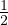,,1} are dissections of [0,1]. The function
f : [0,1] → ℝ, f(x) = x2 is bounded, and its lower and upper Riemann sums with respect to these
dissections are:
Note that
We
will see shortly that this is no accident.
The set of all dissections of a fixed interval [a,b] is a very large and complicated set. To tame this beast,
we need to equip it with some extra structure. The crucial idea turns out to be rather simple: that of
refinement.
Definition 12.4 Given dissections , ′ of [a,b], we say that ′ is a refinement of if ⊆ ′.
If ′\ contains k points, we say that ′ is a k-point refinement of .
Note that:
- Given a pair 1, 2 of dissections, there’s no reason why either should be a refinement of the
other. For example 1 = {0,1∕2,1} and 2 = {0,1∕3,2∕3,1} are both dissections of [0,1],
but 2 is not a refinement of 1 (since 1 ⁄⊆ 2) and nor is 1 a refinement of 2 (since
2 ⁄⊆ 1).
- Every dissection of [a,b] is a refinement of the trivial dissection 0 = {a,b}.
- Every dissection is the unique 0-point refinement of itself.
The idea is that a refinement ′ of contains all the points in and (unless ′ = ) some more
points too, so it splits [a,b] up into more subintervals, at least some of which are narrower.
Intuitively, one expects that passing from to a refinement of can only improve, that is,
increase, the underestimate l (f). Similarly, passing to a refinement of , one expects, can only
reduce the overestimate u (f). This expectation turns out to be essentially correct and is
fundamental.
Lemma 12.5 (Refinement Lemma) Let f : [a,b] → ℝ be bounded, , ′ be dissections of [a,b],
and ′ be a refinement of . Then
Proof: We first prove this in the special case where ′ is a 1-point refinement of . So, let
= {a = a0,a1,…,an = b} and ′ = ∪{z} where z ∈ [a,b]\ . Then there exists k ∈{1,…,n} such that
z ∈ (ak-1,ak). Let
and note that, since [
ak-1,z] and [
z,ak] are subsets of [
ak-1,ak], we know immediately that
m′,m′′≥ mk,
and
M′,M′′≤ Mk (why?). Now
and
We have already observed that
l′(
f)
≤ u′(
f), so we conclude that

that
is, the Refinement Lemma holds for every 1-point refinement of every dissection.
Consider now the case where ′ = ∪{z1,z2,…,zp} is a p-point refinement of . Then we can define a
chain of dissections i, i = 0,…,p, by 0 = and i = i-1 ∪{zi} for each i = 1,…,p. Note
that p = ′, and that each i is a 1-point refinement of i-1. Hence, by the result just
proved,
and
Clearly
l′(
f)
≤ u′(
f), and so

as
was to be proved.
□
Looking back at Example 12.3, we see that
so
3 is a refinement of
2 which is a refinement of
1. Hence, the Refinement Lemma tells us
that
as we
discovered by explicit calculation.
It follows immediately from the Refinement Lemma that every upper Riemann sum is at least as
large as every lower Riemann sum, whatever (possibly different) dissections we use to compute
them.
Lemma 12.6 Let , ′ be two dissections of [a,b] and f : [a,b] → ℝ be bounded. Then
l (f) ≤ u′(f).
Proof: ′′ = ∪ ′ is a refinement of both and ′, so by the Refinement Lemma,
□
Note that we did not assume that either of , ′ was a refinement of the other. The result holds
completely generally!
Example 12.7 Let f : [0,1] → ℝ, f(x) = x2, and for each a ∈ (0,1) let a = {0,a,1}. Then
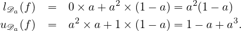
According to Lemma
12.6 for any pair
a,b ∈ (0
,1) we should have
la(
f)
≤ ub(
f), since every upper sum
must be at least as big as every lower sum. That is, for all
a,b ∈ (0
,1),
Is
this obvious? Can you prove it directly, without using Lemma
12.6?
12.2 Definition of the Riemann integral
To define the Riemann integral we will use sequences of dissections.
Definition 12.8 A bounded function f : [a,b] → ℝ is Riemann integrable if there exists a
sequence ( n) of dissections of [a,b] and a real number L such that
In this case, we call
L the
Riemann integral of
f over the interval [
a,b], and denote it
Example 12.9 Let f : [0,2] → ℝ be the “step” function
Show that
f is Riemann integrable on [0
,2] and compute
∫
02f.
Solution: For each n ∈{2,3,…} define the dissection n = {0,1 - 1∕n,1 + 1∕n,2} of 0,1] (see
Figure 9). Then the lower and upper Riemann sums of f with respect to this dissection are
Hence,
ln(
f)
→ 3 and
un(
f)
→ 3, so
f is Riemann integrable, and
□
Example 12.10 Let f : [0,1] → ℝ be the function f(x) = x2. Show that f is Riemann integrable
on [0,1] and compute ∫
01f.
Solution: For each integer n ≥ 1 let n be the regular dissection of [0,1] of size n, that is, the dissection
that divides [0,1] into n subintervals of equal width,
Each
subinterval [
aj-1,aj] = [(
j - 1)
∕n,j∕n] has width 1
∕n, and, since the function
f is increasing,
so the lower and upper Riemann sums with respect to
n are
I claim that, for all
n ∈ ℤ+,
and
leave the proof of this as an exercise (hint: use induction!). Hence, for each
n ∈ ℤ+,
Hence,
f is Riemann integrable and
□
There is something a bit troubling about our definition of ∫
abf. In Example 12.10 we constructed a
sequence ( n) of dissections of [0,1] such that ln(f) → and un(f) →
and un(f) → , and concluded
that
, and concluded
that
But
how do we know that there isn’t some other sequence of dissections, (
n′) say, such that
ln′(
f)
→
and
un′(
f)
→
? If this were true,
∫
01f would be both

and

. “The” Riemann integral of
f wouldn’t be
unique! Luckily, this disaster can never befall us:
Proposition 12.11 (Uniqueness of the Riemann Integral) If f : [a,b] → ℝ is Riemann
integrable then its integral ∫
abf is unique.
Proof: Assume, towards a contradiction, that there exist sequences ( n) and ( n′) of dissections of [a,b]
and L1≠L2 such that
meaning that
∫
abf equals both
L1 and
L2. Without loss of generality, we may assume
L1 < L2. Then, by
the Algebra of Limits,
But
by Lemma
12.6
which contradicts Proposition
2.14.
□
It is convenient to extend the definition of dissection to include the case where the interval is
[a,a] = {a}. The only dissection of [a,a] is the singleton set = {a} (a dissection of size 0). Every function
f : [a,a] → ℝ is bounded, above and below by f(a), so the one and only lower Riemann sum
is

and
the one and only upper Riemann sum is
It
follows that every function is integrable on [
a,a], and
Given a Riemann integrable function
f on [
a,b] where
a ≤ b, it is also convenient to define
I
leave it to the reader to verify that all the results we prove about
∫
abf trivially extend to the case
a ≥ b
with these conventions.
Remark It is very common to denote the integral of a function f : [a,b] → ℝ
rather than ∫
abf. This has (at least) one advantage: one can define the function f (often called the
“integrand”) at the same time as one defines the integral to be computed. For example, it is clear
that
means the Riemann integral (assuming this exists!) of the function
and
we have conveyed this information without going to the trouble of formally defining
f.
Nonetheless I will persist in preferring the more stripped down notation ∫
abf, for two reasons. First,
this is a course in Real Analysis: going to the trouble of formally defining the mathematical objects
we study is the very heart of our endeavour. Second, there’s something a bit naff about an
expression like (12.12): the choice of symbol x is entirely arbitrary and without significance. That
is
So
this notation forces you to focus on something irrevelevant (the name of the symbol
x) instead of thinking
about what the function
f really is.
Incidentally, do we know that the integral (12.13) exists? The next section will answer this question
with a resounding “yes!” in two different ways.
12.3 Two classes of integrable functions
Computing integrals from first principles (that is, straight from Definition 12.8) is hard in general: one
needs to cook up a sequence n of dissections with the right behaviour, and prove that un(f) and ln(f)
converge to the same limit. It’s helpful and reassuring to know in advance that this endeavour isn’t
hopeless, that is, that the function really is integrable (so such a sequence does exist). In this
section we will prove that two very large classes of functions f : [a,b] → ℝ are always Riemann
integrable.
Our first class of integrable functions is the set of monotonic functions. Recall that a function is
monotonic if it is increasing or decreasing.
Theorem 12.12 Let f : [a,b] → ℝ be monotonic. Then f is Riemann integrable.
Proof: We will give the proof in the case where f is increasing and leave the case where f is decreasing as
an exercise.
So, assume that f is increasing. First note that f is certainly bounded, below by f(a) and above by
f(b), so its Riemann sum for any dissection certainly exists. For each n ∈ ℤ+, let n be the regular
dissection of [a,b] of size 2n, that is, the dissection that divides [a,b] into 2n subintervals [aj-1,aj], each of
width (b-a)∕2n. Note that, for all n ∈ ℤ+, n ⊂ n+1, that is, n+1 is a refinement of n. Hence, by the
Refinement Lemma,
that
is, the sequence of lower Riemann sums
ln(
f) is increasing, and bounded above (by
u54(
f) say) while the
sequence of upper Riemann sums
un(
f) is decreasing and bounded below (by
l12(
f) say). Hence, by the
Monotone Convergence Theorem, both
ln(
f) and
un(
f) converge, to
K and
L say. It remains to prove
that
K =
L,
Fix some n ∈ ℤ+. Then, for each j = 1,…,2n,
and so
since the sum telescopes. Hence
un(
f)
- ln(
f)
→ 0. But
un(
f)
- ln(
f)
→ L - K by the Algebra of
Limits, so
L =
K, and hence
f is Riemann integrable on [
a,b].
□
Note that Theorem 12.12 partially covers both Examples 12.9 and 12.10: in both these examples the
function in question is increasing so Theorem 12.12 implies that they’re both Riemann integrable. It does
not, however, tell us anything about the value of ∫
abf, only that it exists. Note also that the function in
Example 12.9 is discontinuous, at a single point (x = 1), which illustrates that while a discontinuous
function cannot be differentiable (Proposition 9.8), it certainly can be integrable. In fact, we can construct
examples of functions which are discontinuous at infinitely many points in [a,b] and yet are still Riemann
integrable on [a,b].
Example 12.13 Consider the function f : [0,1] → ℝ defined so that, f(0) = 0 and, for all
x ∈ (, ], where n ∈ ℤ+, f(x) =
], where n ∈ ℤ+, f(x) =  (see Figure 10). By construction, f is increasing and so
is Riemann integrable on [0,1] by Theorem 12.12. Note, however, that f is discontinuous at every
point
(see Figure 10). By construction, f is increasing and so
is Riemann integrable on [0,1] by Theorem 12.12. Note, however, that f is discontinuous at every
point  for n ≥ 2.
for n ≥ 2.
If even such a pathological function as Example 12.13 is Riemann integrable, you may be wondering
whether there are any bounded functions which aren’t! Such functions do exist, but we need a little
creativity to construct them.
Example 12.14 Let f : [0,1] → ℝ such that f(x) = 0 if x ∈ ℚ and f(x) = 1 if x ℚ. I claim that
f is not Riemann integrable.
ℚ. I claim that
f is not Riemann integrable.
Proof: Let = {a0,…,an} be any dissection of [0,1]. Then, by the Density Theorems of ℚ in ℝ and ℝ\ℚ
in ℝ (Theorems 3.15 and 3.16), every subinterval [aj-1,aj] contains both rational and irrational members,
so mj = 0 and Mj = 1 for all j. Hence
Since this is true for
all dissections of [0
,1], given any sequence
n of dissections,
so
f
is not Riemann integrable.
□
Remark Note that to show f is not Riemann integrable we had to prove that un(f) - ln(f) ↛ 0
for all sequences of dissections n of [0,1]. Just considering a single sequence is not enough.
Theorem 12.12 gives us one interesting class of functions f : [a,b] → ℝ that are Riemann integrable:
those that are monotonic. Our next theorem gives us another rather more useful class: continuous
functions.
Theorem 12.15 Let f : [a,b] → ℝ be continuous. Then f is Riemann integrable.
Proof: First note that, since f is continuous, it is certainly bounded (by the Extreme Value Theorem), so
l (f) and u (f) exist for any dissection of [a,b].
Consider the sequence ( n) of regular dissections of [a,b] of size 2n. Then n ⊂ n+1 for all
n, so by the Refinement Lemma, ln(f) is increasing (and bounded above) and un(f) is
decreasing (and bounded below). Hence, by the Monotone Convergence Theorem (Theorem
3.20),
for
some
L,K ∈ ℝ and, by Proposition
2.14 and Lemma
12.6,
K ≤ L. It remains to show that
L - K = 0.
Assume, towards a contradiction, that L - K > 0. For a given fixed n ∈ ℤ+, define as usual
Then
This
sum consists of 2
n terms, each non-negative, so at least one term must be greater than or equal to
(
L - K)
∕2
n. That is, there must exist
j ∈{1
,2
,…,2
n} such that
But
f : [
aj-1,aj]
→ ℝ is continuous so, by the Extreme Value Theorem,
f attains both a maximum and
minimum value on [
aj-1,aj], that is, there are points,
xn and
yn say, in [
aj-1,aj] such that
f(
xn) =
Mj and
f(
yn) =
mj. Hence, for each
n ∈ ℤ+ there exist
xn,yn ∈ [
a,b] such that
Consider the sequence (
xn). It is bounded, so, by the Bolzano–Weierstrass Theorem, it has a convergent
subsequence
xnk → c ∈ [
a,b]. By (
12.14),
so
ynk → c also, by the Squeeze Rule. Now
f is continuous, so
f(
xnk)
→ f(
c) and
f(
ynk)
→ f(
c), and
hence
f(
xnk)
- f(
ynk)
→ f(
c)
- f(
c) = 0. But this contradicts (
12.15) and Proposition
2.14.
□
The function f : [0,1] → ℝ, f(x) = is both increasing and continuous, so we know that the
integral (12.13) exists in two ways: from Theorem 12.12 and from Theorem 12.15.
12.4 Elementary properties of the Riemann integral
The Riemann integral has many convenient properties.
Theorem 12.16 (The Join Rule) Let f be Riemann integrable on [a,b] and on [b,c]. Then f
is Riemann integrable on [a,c] and
Proof: By assumption, there exist sequences of dissections ( n′) of [a,b] and ( n′′) of [b,c] such that
ln′(f) →∫
abf, un′(f) →∫
abf, ln′′(f) →∫
bcf, and un′′(f) →∫
bcf. Let n = n′∪ n′′. Then n
is a dissection of [a,c] and it follows directly from Definition 12.2 that ln(f) = ln′(f) + ln′′(f) and
un(f) = un′(f) + un′′(f). Hence, by the Algebra of Limits, ln(f) →∫
abf + ∫
bcf and
un(f) →∫
abf + ∫
bcf, so the claim follows. □
We next want to prove that the Riemann integral is linear, that is, ∫
ab(αf + βg) = α∫
abf + β ∫
abg,
for any constants α,β. To do this, we need the following:
Lemma 12.17 Let f,g : [a,b] → ℝ be bounded functions and be a dissection of [a,b]. Then
Proof: Let = {a0,a1,…,an} and Ij = [aj-1,aj]. Let
and
mj(
g)
,Mj(
g)
,mj(
g +
f), and
Mj(
g +
f) be defined similarly. Then, for all
x ∈ Ij,
f(
x) +
g(
x)
≥ mj(
f) +
mj(
g), so
mj(
f) +
mj(
g) is certainly a lower bound on
{f(
x) +
g(
x) :
x ∈ Ij}. Since
mj(
f +
g) is the
greatest lower bound on this set, it follows that
mj(
f +
g)
≥ mj(
f) +
mj(
g). Hence
Similarly, for all
x ∈ Ij,
f(
x) +
g(
x)
≤ Mj(
f) +
Mj(
g), so
Mj(
f) +
Mj(
g) is certainly an upper bound on
{f(
x) +
g(
x) :
x ∈ Ij}. Since
Mj(
f +
g) is the
least upper bound on this set, it follows that
Mj(
f +
g)
≤ Mj(
f) +
Mj(
g). Hence
□
Theorem 12.18 (Linearity of the Riemann Integral) Let f,g be Riemann integrable on [a,b], and
α ∈ ℝ be a constant. Then
- αf is Riemann integrable on [a,b], and ∫
abαf = α∫
abf,
- f + g is Riemann integrable on [a,b], and ∫
ab(f + g) = ∫
abf + ∫
abg.
Proof: (i) By assumption, there is a sequence of dissections ( n) such that ln(f) →∫
abf
and un(f) →∫
abf. It follows directly from Definition 12.2 that ln(αf) = αln(f) and
un(αf) = αun(f) if α ≥ 0, and ln(αf) = αun(f) and un(αf) = αln(f) if α < 0. In either case,
ln(αf) → α∫
abf and un(αf) → α∫
abf by the Algebra of Limits, and the claim follows.
(ii) Let ( n) be as defined above. By assumption, there is also a sequence of dissections ( n′) such that
ln′(g) →∫
abg and un′(g) →∫
abg. Let n′′ = n ∪ n′, and note that this is a refinement of both n
and n′. Now, by Lemma 12.17 and the Refinement Lemma
Now
by
the Algebra of Limits, so
by
the Squeeze Rule. Hence,
f +
g is Riemann integrable and
□
We next prove that Riemann integration preserves inequalities.
Proposition 12.19 Let f,g : [a,b] → ℝ be Riemann integrable and assume f(x) ≤ g(x) for all
x ∈ [a,b]. Then
Proof: By assumption there exist sequences of dissections n′, n′′ such that ln′(f) →∫
abf and
ln′′→∫
abg. Let n = n′∪ n′′. Then, by the Refinement Lemma (and the Squeeze Rule)
ln(f) →∫
abf and ln →∫
abg also. But, for each n, ln(g) ≥ ln(f) since inf g ≥ inf f on any subset of
[a,b]. Hence, ∫
abg -∫
abf, being the limit of a convergent non-negative sequence, is ≥ 0 (Proposition 2.14).
□
Recall that the triangle inequality asserts that, for any pair of real numbers x1,x2,
It is
but the work of a moment to prove (by induction) that this extends to arbitrary finite sets of real
numbers:
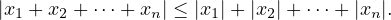
Actually, with a bit more work one can show that the same claim holds for infinite sums, that is, series.
That is, if a series
∑
xn converges absolutely, then
(Prove it!) Roughly speaking, we can think of an integral as being a kind of “continuously
indexed infinite sum.” So it’s natural to ask whether a Triangle Inequality holds for integrals
too.
Theorem 12.20 (The Triangle Inequality for Riemann Integrals) If f : [a,b] → ℝ is
continuous, then
Proof: For all x ∈ [a,b], -|f(x)|≤ f(x) ≤|f(x)| so, by Proposition 12.19,
whence the claim immediately follows.
□
12.5 The Fundamental Theorem of the Calculus
So far we have developed some powerful theoretical tools to show that a given function is integrable and to
relate the integrals of related integrable functions, but we don’t have any really convenient techniques for
actually computing Riemann integrals. To compute
for
example, we had to resort to exhibiting a sequence of dissections whose upper and lower sums converge to a
common limit, in this case,

(see Example
12.10). In principle, we can always compute Riemann integrals
like this, but in practice this method of computing integrals is very onerous and, unless the integrand (the
function to be integrated) is fairly simple, is likely to be intractable. Consider, for example, attempting to
compute
using
this method. We know that this integral exists (Theorem
12.15) because we know that sin is continuous,
but we have no hope of computing it directly using Riemann sums. In this section, we establish a
fundamental connexion between Riemann integration and differentiation which will give us a convenient
means of computing
∫
abf whenever we can dream up a function whose
derivative equals
f. Once we have
done this we will rarely have to resort to computing sequences of Riemann sums to compute
integrals.
Theorem 12.21 (Fundamental Theorem of the Calculus version 1) Let I ⊆ ℝ be an
interval, f : I → ℝ be continuous and a ∈ I. Define F : I → ℝ by
Then F is differentiable, and F′ =
f.
Proof: First note that F is well-defined (that is, the integral defining F(x) exists for all x ∈ I) by
Theorem 12.15 since f is continuous on [a,x] ⊆ I if x ≥ a, and continuous on [x,a] ⊆ I if x < a. We wish
to compute
So,
let (
yn) be any sequence in
I\{x} such that
yn → x, and
We
must show that
sn → f(
x).
For each n, either yn > x or yn < x. If yn > x then, by Theorem 12.16,
whereas if
yn < x,
In
either case, by the Extreme Value Theorem, there exist
wn and
zn between
x and
yn such that
f(
wn) is
the minimum value of
f on the closed interval with endpoints
x and
yn, and
f(
zn) is the maximum value of
f on this interval. Hence, by Proposition
12.19,
In either case, we conclude that
Now,
yn → x so
wn → x and
zn → x also, by the Squeeze Rule, and
f is continuous, so
f(
wn)
→ f(
x)
and
f(
zn)
→ f(
x). Hence, by the Squeeze Rule again,
sn → f(
x), which completes the proof.
□
As a by-product of this theorem we see that any function which is continuous on an interval is the
derivative of some differentiable function on that interval, an interesting and far from obvious fact. Even
better, Theorem 12.21 immediately implies a second theorem which renders the job of computing many
Riemann integrals almost trivial:
Theorem 12.22 (Fundamental Theorem of the Calculus version 2) Let f : [a,b] → ℝ be
continuous and F : [a,b] → ℝ be any differentiable function such that F′ = f. Then
Proof: Define the function g : [a,b] → ℝ,
Then, by Theorem
12.21 and the definition of
F,
for
all
x ∈ [
a,b]. Hence, by Proposition
10.10,
g is constant, so
g(
b) =
g(
a), that is
and
the result immediately follows.
□
Example 12.23 Compute the Riemann integrals
- ∫
-11x2 dx,
- ∫
0π sinxdx,
Solution:
(i) Let f(x) = x2 and F(x) = x3∕3. Then f is continuous and F′ = f on [-1,1] so, by
Theorem 12.22,
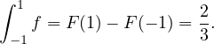
(ii) Let f(x) = sinx and F(x) = -cosx. Then f is continuous and F′ = f on [0,π] so, by
Theorem 12.22,
□
Exercise 12.24 Let f : ℝ → ℝ,
Compute
f′(
x). Check your answer by watching this
[VIDEO].
Having established Theorem 12.22, we see that we can explicitly compute
if we
can think of an
antiderivative of
f, that is, any function whose
derivative is
f(
x). This trick is so
pervasive in integral calculus that it leads the unwary to identify
integration of
f (that is, the process of
computing a Riemann integral
∫
abf) with the process of writing down an antiderivative of
f. Indeed, it is
common practice to call an antiderivative of
f an
indefinite integral of
f and to denote any such function
by the symbol
This
notation has some practical advantages, but it also, unfortunately, generates a huge amount of confusion.
Note that
is a
single number and that its
definition has nothing whatsoever to do with antiderivatives of
f: it is the
unique real number which is no greater than any upper Riemann sum of
f on [
a,b] and no less than any
lower Riemann sum of
f on [
a,b]. In particular, it is
not a function of the “variable”
x. Indeed, we could
equally well have written it
∫
abf(
y)
dy or
∫
abf(Γ

)
dΓ
, which is one reason to prefer the simpler notation
∫
abf. It
is a function of
a and
b, however.
By contrast, ∫
f(x)dx is just a (slightly ambiguous) symbol denoting any function whose derivative (at
x) is f(x). It is a function of x, not a single number, and its definition has nothing to do with Riemann
sums. That these two things turn out to be closely related is (as its name suggests) a very important
theorem: the Fundamental Theorem of the Calculus. To understand calculus properly it is important to
maintain a clear conceptual distinction between the Riemann integral ∫
abf and any antiderivative that one
might use to compute it.
We have now rigorously developed all the fundamental concepts of differential and integral calculus. It
would be a straightforward matter to combine the Fundamental Theorem of the Calculus with the Product
Rule of differentiation to develop the technique of integration by parts, or with the Chain Rule to develop
the technique of integration by substitution. Such development requires no new analytic insight and so is
better placed in a course on the methods of calculus, rather than a course on real analysis such as
this.
12.6 The natural logarithm
Definition 12.25 The (natural) logarithm is the function
Remarks
- The function f(t) = 1∕t is continuous on (0,∞), and hence Riemann integrable on [1,x] (if
x ≥ 1) or [x,1] (if 0 < x < 1), so the function ln is well-defined (Theorem 12.15).
- ln is differentiable, by the Fundamental Theorem of the Calculus version 1 (Theorem 12.21),
and
- It follows immediately from the definition that
The logarithm function obeys a very useful identity.
Proposition 12.26 For all x,y ∈ (0,∞), ln(xy) = lnx + lny.
Proof: Choose and fix y ∈ (0,∞) and consider the function
By
the Chain Rule,
so
f
is constant (Proposition
10.10). Hence, for all
x,
f(
x) =
f(1) = ln
y - 0
- ln
y = 0.
□
A second useful identity quickly follows from this.
Proposition 12.27 For all x ∈ (0,∞) and n ∈ ℤ, lnxn = nlnx.
Proof: Exercise. (Hint: proof by induction.)
□
Proposition 12.28 The function ln : (0,∞) → ℝ is smooth, strictly increasing, and bijective.
Proof: Let f : (0,∞) → ℝ, f(x) = 1∕x. We have noted that ln is differentiable with derivative f. But f is
smooth, so ln is smooth. Also, for all x ∈ (0,∞), f(x) > 0, so ln is strictly increasing, and hence injective
(Proposition 10.10). It remains to show that ln is surjective.
For each n ∈ ℤ+, n ≥ 2, let n be the regular dissection of [1,n] of size (n - 1), that is
Then
where we have used the fact that
f is monotonically decreasing (the case
n = 8 is depicted above). The
sequence (
sn) is unbounded above (Example
5.2), so the sequence ln
n is also unbounded above. Hence,
given any
K ≥ 0, there exists
n ∈ ℤ+ such that ln
n > K. But ln1 = 0, and ln is continuous (since
it is differentiable) so, by the Intermediate Value Theorem, there exists
x ∈ [1
,n] such that
ln
x =
K. Hence, ln takes all non-negative values. Let
L < 0. As we just showed, there exists
x ∈ [1
,∞) such that ln
x =
-L. But then, by Proposition
12.27, ln(1
∕x) =
-ln
x =
L. So ln also
takes all negative values, and we conclude that ln : (0
,∞)
→ ℝ is surjective, hence bijective.
□
It is common to define natural logarithm to mean the inverse function to the exponential function.
Definition 12.25 has no obvious connexion with the exponential function (which, as we saw,
is defined using a convergent power series), so this coincidence of terminology needs to be
justified.
Proposition 12.29 ln : (0,∞) → ℝ is the inverse function to exp : ℝ → (0,∞).
Proof: We must show that, for all x ∈ ℝ, ln(exp(x)) = x, and for all y ∈ (0,∞), exp(lny) = y. Consider
the function

By
the Chain Rule,
for
all
x, so
f is constant (Proposition
10.10). Hence, for all
x,
f(
x) =
f(0) = ln1
- 0 = 0, that is,
ln(exp(
x)) =
x. Now, for all
y ∈ (0
,∞),
as we
have just shown. But ln is injective, so if ln
z = ln
y then
z =
y. Hence exp(ln
y) =
y, as was to be shown.
□
So, for each positive number y, lny is the real number whose exponential is y. Recall we defined Euler’s
number to be
It
follows that ln
e = 1. There is an alternative way to define
e, as the limit of the sequence (1 + )
n. We are
now in a position to prove this.
Proposition 12.30 The sequence xn = n converges to e.
Proof: It is clear that xn > 0 for all n. Now, for all n, by Proposition 12.27,
where
yn = 1 +

. Note that
yn → 1. Since ln is differentiable (everywhere, and, in particular, at 1), the
sequence of difference quotients
converges to ln
′(1) = 1
∕1 = 1, that is,

Now
exp is continuous, so
But
exp(ln
xn) =
xn (Proposition
12.29), so
xn → e.
□
Proposition 12.29 implies that, for all a > 0, lna is the unique real number y such that exp(y) = a. This
motivates the following definition:
Definition 12.31 Let a > 0 and x ∈ ℝ. Then a to the power x is
It follows from Proposition 12.27 that this definition of ax coincides with the more obvious definition of
ax in the case where x is an integer. Working a bit harder, one can show that
that
is, exp((
p∕q)ln
a) coincides with
bp, where
b is the unique positive real number such that
bq =
a. So
definition
12.31 really does generalize the old meaning of
ax to the case where
x is irrational. It is not hard
to prove that
f : (0
,∞)
→ ℝ,
f(
x) =
xr, where
r is any real constant, is differentiable, and has the
derivative we expect.
Proposition 12.32 Let f : (0,∞) → ℝ be the function f(x) = xr, where r is any real constant.
Then f is differentiable, and for all x ∈ (0,∞),
Proof: We note that f(x) = exp(r lnx) and so, by the Chain Rule, f is differentiable with
□
Summary
- A dissection of [a,b] is a finite subset = {a0,a1,…,an} of [a,b] such that
- Given a bounded function f : [a,b] → ℝ, and a dissection , the lower Riemann sum is
and the upper Riemann sum is
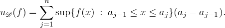
- f is Riemann integrable if there exists a sequence ( n) of dissections of [a,b] such that
un(f) and ln(f) converge to a common limit. In this case, we denote this limit by
and call it the Riemann integral of f (on, or over, [a,b]).
- It follows from this definition that all continuous functions, and all monotonic functions are
Riemann integrable.
- We also proved
where α,β are constants.
- There is an important link between Riemann integrals and derivatives, given by the Fundamental
Theorem of the Calculus:
- Version 1: if f is continuous and F(x) = ∫
axf, then F′ = f.
- Version 2: if f is continuous and F is some antiderivative of f (that is, a function satisfying
F′ = f), then ∫
abf = F(b) - F(a).
- Version 2 of the Fundamental Theorem of the Calculus provides a flexible and convenient method for
computing many Riemann integrals.
- We can use the Riemann integral to define the natural logarithm function
This turns out to be the inverse function to exp.
 ∈ ℝ and transcendental real numbers, for example e,π ∈ ℝ.
∈ ℝ and transcendental real numbers, for example e,π ∈ ℝ.
 . So, for example
. So, for example


 ” means “is an not element of” and
“
” means “is an not element of” and
“


 : there
exists
: there
exists  . But then
. But then 


 [
[
 . Similarly,
. Similarly,  . Let
. Let  is a positive number, there exists
is a positive number, there exists  , and hence,
, and hence, 

 is
never 0, so 1
is
never 0, so 1 )
)  .
.
 (i.e. give a direct
(i.e. give a direct 
 [
[ :
: 
 can’t be rational, but you have
can’t be rational, but you have 
 ] is nested. The first few intervals are
] is nested. The first few intervals are

 is a subsequence of
is a subsequence of 
 , where
I have put a box around it so that we can bear in mind that this is a “formal” fraction, so for example we
have no “cancellation” rules yet.
, where
I have put a box around it so that we can bear in mind that this is a “formal” fraction, so for example we
have no “cancellation” rules yet.
 and
and  represent the same number if and only if either there is a nonzero integer
represent the same number if and only if either there is a nonzero integer 
 as
above we have
as
above we have

 0.
Here
0.
Here  0 is exactly the usual definition of
0 is exactly the usual definition of  0
0 0 where I am using that 10
0 where I am using that 10 0.
0.


 diverges.
diverges.

 does
does 


 is bounded. This means that there
is a constant
is bounded. This means that there
is a constant  with those of
with those of  . Since we are trying to show
. Since we are trying to show

 + + + + 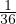 +
+ + + + 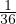 +  . Finding the value of this series was known as the Basel problem, and was solved by
Euler in 1734 – if you are curious the Wikipedia page provides details of Euler’s method of
solution.
. Finding the value of this series was known as the Basel problem, and was solved by
Euler in 1734 – if you are curious the Wikipedia page provides details of Euler’s method of
solution.

 and
and  ; then
; then


 =
= 


 then the Alternating Sign Test applies, as the sequence (
then the Alternating Sign Test applies, as the sequence ( ). Any guesses what it might be (
). Any guesses what it might be (


 lim
lim
 lim
lim


 +
+  =
= 


![S : ∀x ∈ (0,∞ )∃y ∈ ℚ 0 < y < 1∕x
¬S : ∃x ∈ (0,∞ )¬[∃y ∈ ℚ 0 < y < 1∕x]
⇐ ⇒ ∃x ∈ (0,∞ )∀y ∈ ℚ ¬[0 < y < 1∕x]
⇐ ⇒ ∃x ∈ (0,∞ )∀y ∈ ℚ ¬[0 < y ∧ y < 1∕x]
⇐ ⇒ ∃x ∈ (0,∞ )∀y ∈ ℚ [y ≤ 0 ∨ y ≥ 1∕x]](notes347x.png)
![ℤ+ is unbounded above ⇐ ⇒ ¬ [ℤ+ is bounded above]
⇐ ⇒ ¬ [∃K ∈ ℝ ∀n ∈ ℤ+ n ≤ K]
+
⇐ ⇒ ∀K ∈ ℝ ¬[∀n ∈ ℤ+ n ≤ K ]
⇐ ⇒ ∀K ∈ ℝ ∃n ∈ ℤ ¬[n ≤ K ]
⇐ ⇒ ∀K ∈ ℝ ∃n ∈ ℤ+ n > K.](notes348x.png)
![a ↛ 0 ⇐ ⇒ ¬[a → 0]
n n + +
⇐ ⇒ ¬[∀ε ∈ (0,∞) ∃N ∈ ℤ ∀n ∈ ℤ ∩ [N, ∞ ) |an - 0| < ε]
⇐ ⇒ ∃ε ∈ (0,∞ )¬ [∃N ∈ ℤ+ ∀n ∈ ℤ+ ∩[N,∞ ) |an| < ε]
⇐ ⇒ ∃ε ∈ (0,∞ )∀N ∈ ℤ+¬ [∀n ∈ ℤ+ ∩[N,∞ ) |an| < ε]
⇐ ⇒ ∃ε ∈ (0,∞ )∀N ∈ ℤ+ ∃n ∈ ℤ+ ∩ [N, ∞ ) ¬[|a | < ε]
+ + n
⇐ ⇒ ∃ε ∈ (0,∞ )∀N ∈ ℤ ∃n ∈ ℤ ∩ [N, ∞ ) |an| ≥ ε.](notes349x.png)


 .
.
 ). As
). As


 in the definition of convergence of a sequence) there is an
in the definition of convergence of a sequence) there is an 
 , so for such
, so for such 


 (
( is continuous,
is continuous,
 (
( (
( is between
is between  (
( (
( (
(

 is different from
is different from  [0
[0![¬[∀ε ∈ (0,∞),∃δ ∈ (0,∞ ),∀x ∈ (D\{a})∩ (a- δ,a+ δ),|f(x)- L| < ε]
⇔ ∃ε ∈ (0,∞ )¬ [∃δ ∈ (0,∞ ),∀x ∈ (D\{a})∩ (a- δ,a+ δ),|f(x)- L | < ε]
⇔ ∃ε ∈ (0,∞ ),∀δ ∈ (0,∞ )¬[∀x ∈ (D\{a})∩ (a- δ,a+ δ),|f(x)- L | < ε]
⇔ ∃ε ∈ (0,∞ ),∀δ ∈ (0,∞ ),∃x ∈ (D\{a})∩ (a- δ,a+ δ)¬[|f(x)- L | < ε]
⇔ ∃ε ∈ (0,∞ ),∀δ ∈ (0,∞ ),∃x ∈ (D\{a})∩ (a- δ,a+ δ),|f(x)- L | ≥ ε.](notes440x.png)


 +
+